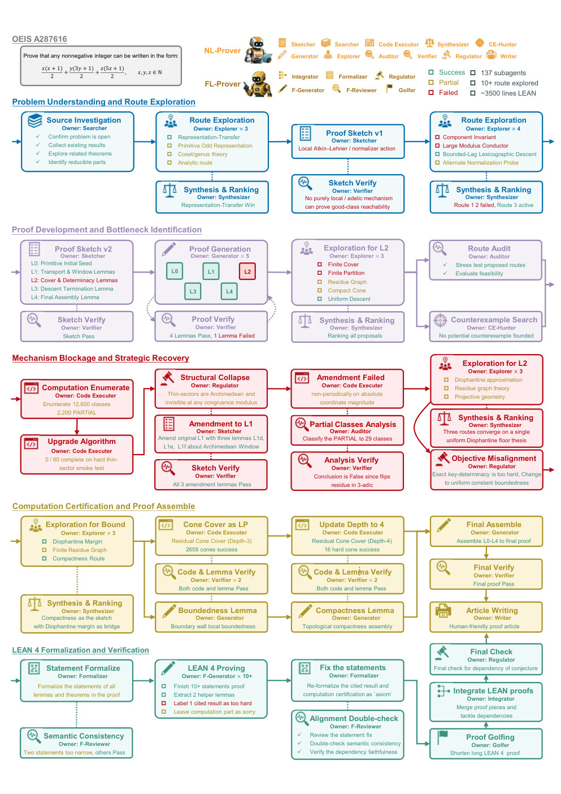

A Formal Language Prover agent translates natural-language proofs into Lean 4 and verifies them with the Lean compiler, producing over 3,500 lines for OEIS A287616.
Abstract
AI reasoning has become a central focus in contemporary artificial intelligence, largely driven by the success of large language models. However, mathematical research, which is characterized by non-linear derivation paths, rigorous logical requirements, and protracted exploration cycles, poses severe challenges for existing reasoning systems. To overcome these limitations, we present the MechMath Agent Team (MMAT), which is a large language model driven agent designed to serve as a co-pilot throughout the full cycle of mathematical research. We design a tripartite Harness Architecture that decouples system responsibilities into Control, Execution, and Augmentation planes, thereby reconciling rigorous logical control with the agility demanded by open-ended research. Building upon this framework, we instantiate three specialized agents: a Knowledge Base Manager, a Natural Language Prover, and a Formal Language Prover, all operating in a closed loop to produce formally certified mathematical proofs. We evaluate MMAT on open problems in Number Theory, Algebraic Complexity Theory, Differential Algebra, Operator Algebra, and Inequalities. Across a two-month deployment, 11 problems have been solved, demonstrating its capacity to act as a co-pilot throughout the entire research cycle. The contributions are threefold: a general decoupled Harness Architecture for multi-agent mathematical reasoning, its concrete instantiation in the MMAT system, and empirical validation on a diverse suite of open problems.
Problem
Mathematical research involves non-linear derivations, strict correctness requirements, and long exploration cycles. Linear multi-agent LLM pipelines handle these poorly because of rigid workflows and error propagation.
Approach
The authors propose a tripartite Harness Architecture with Control, Execution, and Augmentation planes. In the Control plane, an Orchestrator manages an execution DAG and a task ledger. They instantiate three agents in a closed loop: a Knowledge Base Manager with an object-oriented card memory graph that includes Lean cards, a Natural Language Prover, and a Formal Language Prover. The Formal Language Prover has Formalizer, Reviewer, Generator, Integrator, Golfer, and Regulator roles, checks proofs with the Lean 4 compiler, scans for sorry, guards statements against tampering, and searches lemmas with LeanSearch and Loogle.
Figure 2: The Harness Architecture. The whole architecture can be divided into three parts: The control plane (blue part), the execution plane (purple) part and the augmentation plane (green part).Figure 8: Project on Sparse polynomial with MMAT. Through interaction with MMAT , we resolved six major problems, among which GCD, Divisability, and Multiplication were explicitly identified as open problems.
Results
Over a two-month deployment, 11 open problems across number theory, algebraic complexity, differential algebra, operator algebra, and inequalities were addressed. Some were fully or partially formalized in Lean, including a 3,500+ line Lean 4 proof for OEIS A287616.

Figure 5: The multi-agent theorem proving pipeline example of MMAT on open problem OEIS A287616. The NL-Prover orchestrates a series of 137 specialized subagents to execute route exploration, dynamic error recovery, large-scale computational validation, and finally finish the proof. FL-Prover compiles the proof into over 3,500 lines of formal Lean 4 code, providing rigorous guarantees for the natu